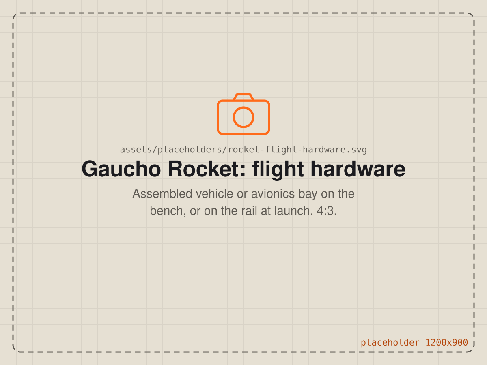
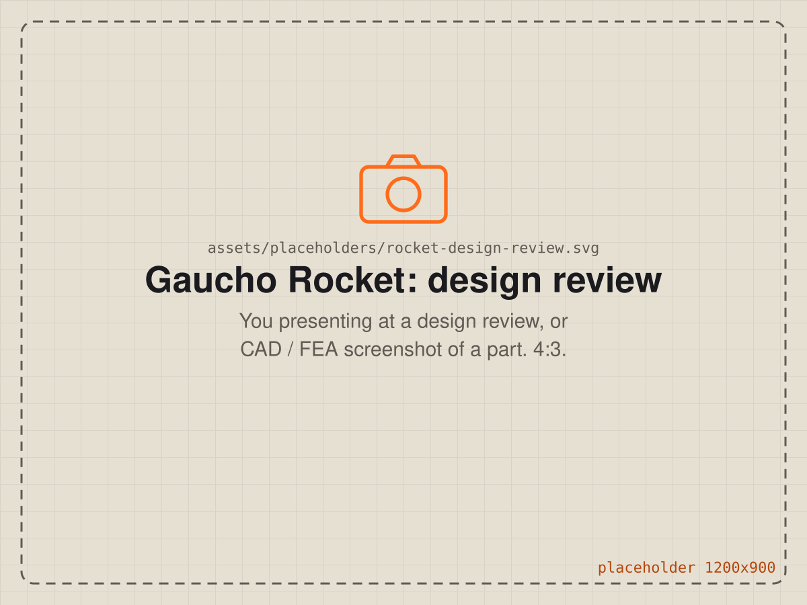

Student rocketry team
Gaucho Rocket Project
Vice President, Sep 2024 – Jun 2026, UC Santa Barbara
Turning a team's subsystems into one packaged flight vehicle.
As vice president I owned integration: structures, propulsion, actuators, sensors, custom PCBs, power electronics and controls all had to fit, survive and work together as flight hardware.
- Ran FEA and structural optimization to trade mass against stiffness, strength and factor of safety.
- Designed for manufacturing across CNC machining, additive, sheet metal and composites.
- Organized and led design reviews with faculty and industry sponsors.

